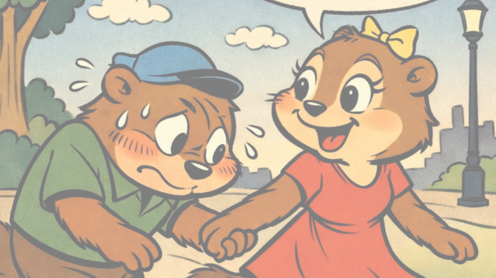

青騎士さんの、一曲勝負。
青騎士さん専用鬼レンチャン
素材を読み込み中…

◎
あなたのステージ
カメラをつなぐと、ここに映りますマイク接続前
目標 —あなた —— cent
00:00 / 00:1601何度でも
まずはメロディーを覚えよう
課題曲を聴く
お手本音源 / 約11秒
02
音程を外さず、最後まで。
一曲に挑戦する
♬ ヘッドホン・イヤホンを使ってください。スピーカーの音をマイクが拾うと正しく判定できません。
目標の音程外れた箇所現在地
±半音以内 / 外れ・無音が0.25秒続くと失敗
音ズレの調整・遊び方
お手本を聴いてからマイクを接続し、挑戦をはじめます。動画の太鼓の「1」が消えたら歌い出しです。白いバーの高さに音程を合わせ、青い線に沿って歌ってください。最後まで歌い切ると「クリア」が表示されます。
判定が歌声より早く進む場合は遅延補正を増やします。端末・マイクで最適値は変わります。音の切り替わりには短い猶予があります。オクターブ違いも外れとして判定します。タブ移動・端末切断時は中断となり、最初からやり直せます。